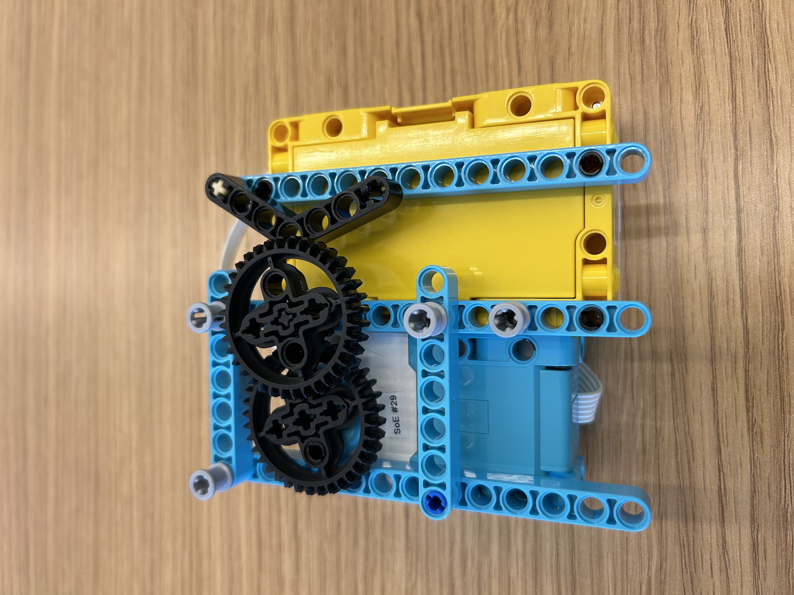
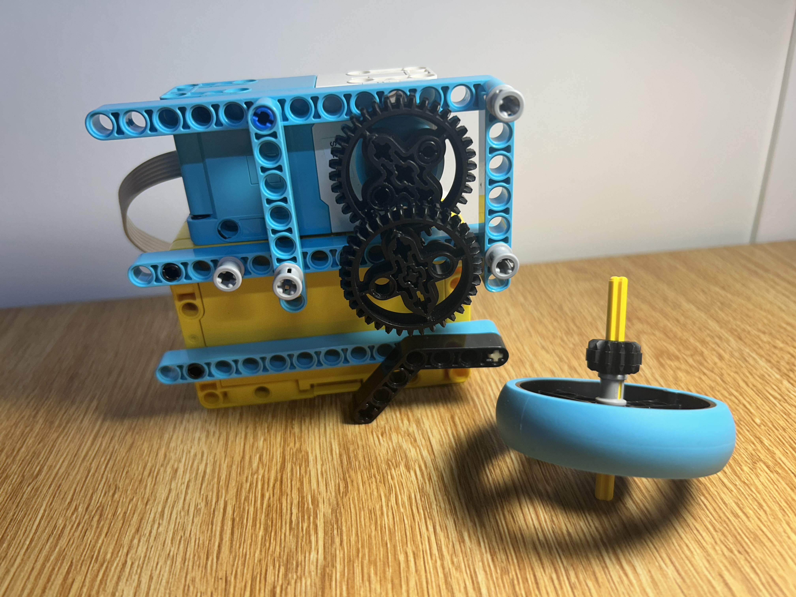
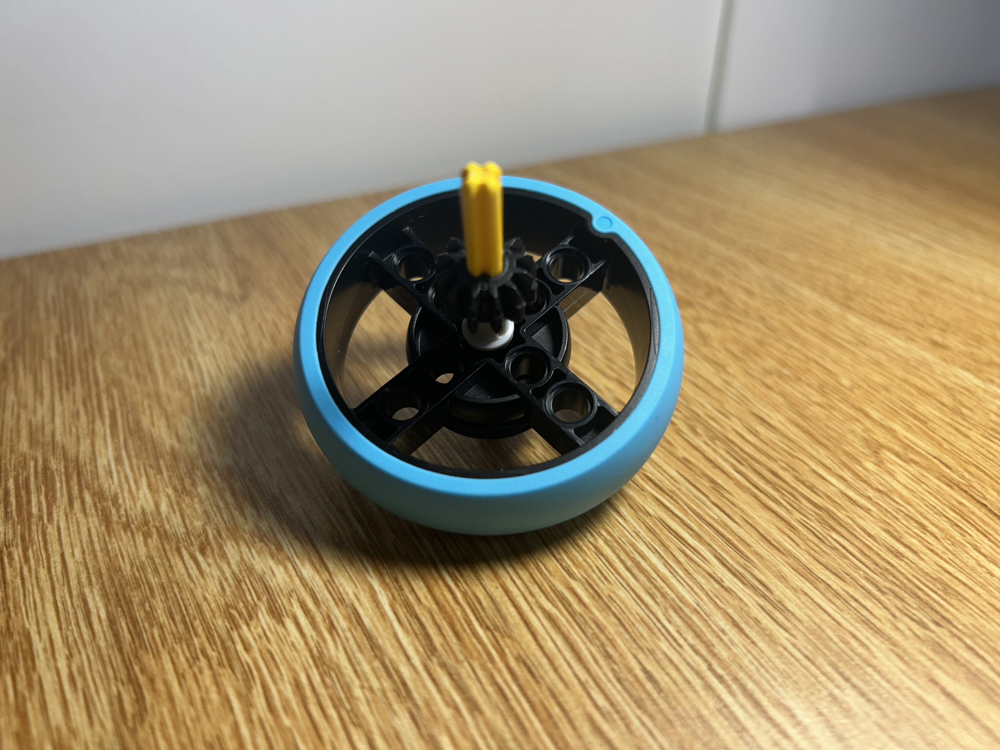

Project Portfolio

Project 4: Top Spinner
September 21, 2026,
This project is inspired by Beyblades, but it was also an opportunity to understand gear ratios. The goal of this project was to design and build a spinning top that could spin the longest.
I used the strongest motor provided in the LEGO SPIKE Prime kit. While this motor delivers strong torque, it lacks speed. To create a top that spins fast, I implemented a compound gear train to convert that torque into speed.
The train uses a 36-tooth gear as the input, driving a 10-tooth gear. That 10-tooth gear shares an axle with a second 36-tooth gear, which in turn drives a final 10-tooth output gear. Each stage steps up the speed by a factor of 3.6, giving a combined speed increase of about 13x — trading torque for the fast spin needed to keep the top going.
The top lasted around ~ # seconds.

